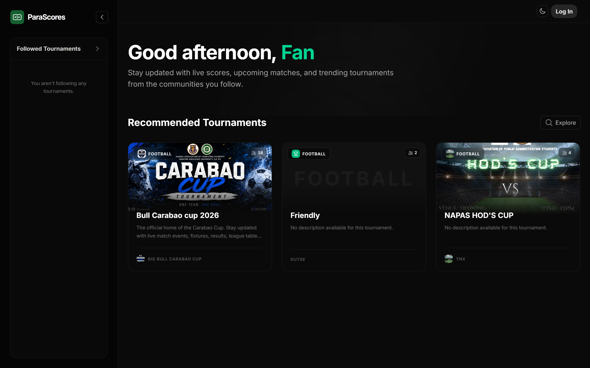
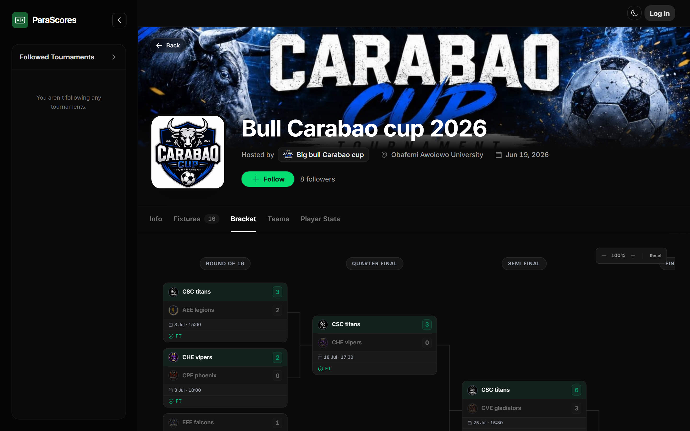
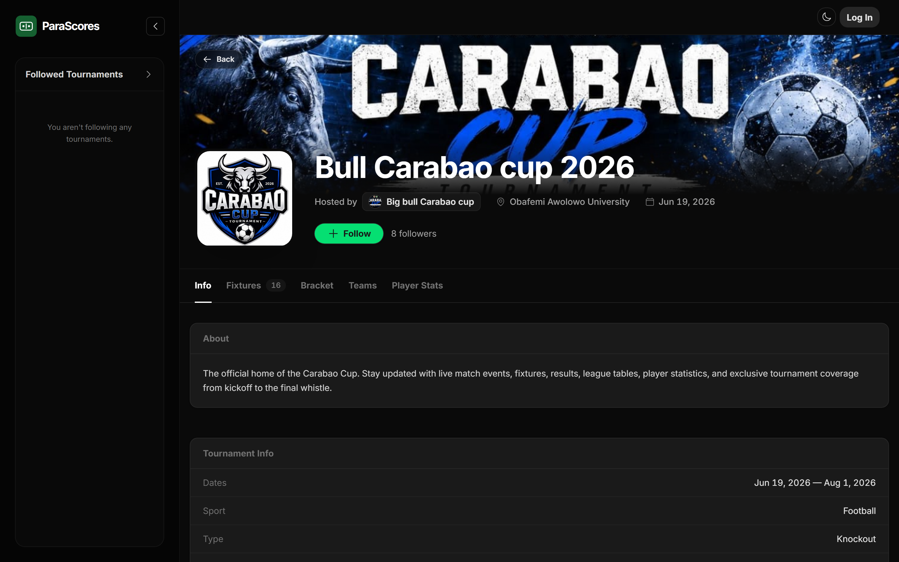

Full-stack developer — Lagos, Nigeria — Open to remote work
Three years of shipping production web applications. Most recently, I founded ParaScores — a sports tournament platform with ~500 users — and designed, built, and deployed every part of it myself.

The fan home feed — live tournaments from real communities


~500
registered users
20+
tournaments hosted
1,300+
production commits
28
API domain modules
A multi-tenant SaaS for grassroots sports: organizers create tournaments, fans follow live scores, brackets, and standings. Three apps from one codebase — marketing site, organizer dashboard, and admin panel — routed by subdomain. Real-time scoring over Server-Sent Events. Paystack payments: subscriptions, paid team registration with platform commission, instant payouts to organizers. PWA with push notifications, embeddable widgets for third-party sites, and server-generated share graphics. Nuxt 4, NestJS, PostgreSQL, Prisma, Redis, Docker.
More projects
I'm a full-stack developer based in Lagos. I got into software through football — I wanted better tools for the tournaments happening around me, so I learned to build them. That turned into ParaScores, which now runs real competitions with real prize money on the line.
I care about the whole stack: how an API is modeled, how a UI feels at 3G speeds, how payments fail gracefully. B.Sc. Electronic & Electrical Engineering, Obafemi Awolowo University, 2026.
Vue 3, Nuxt 4, React, Next.js, TypeScript, Pinia, TanStack Query, Tailwind CSS, PWA, SSR
Node.js, NestJS, Express, REST, Server-Sent Events, PostgreSQL, Prisma, Redis, Firebase, JWT/OAuth
Docker, Paystack, Cloudinary, Sentry, Vercel, web-push
Jest, Playwright, React Testing Library, Git, Postman, Swagger
Open to remote full-stack and frontend roles.
EU & Africa timezones — contract or full-time.